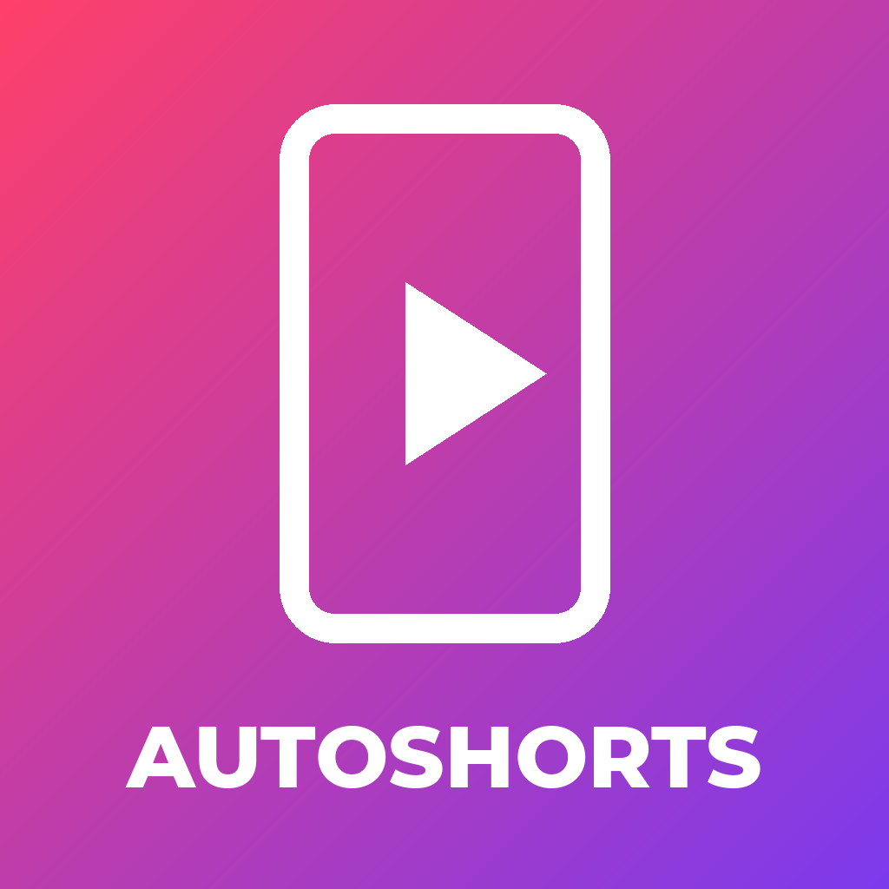

AutoShorts is a personal software tool by David Suárez Marra (Spain). It produces short vertical videos (Shorts, Reels and TikToks) in Spanish and English about current topics and evergreen curiosities, and publishes them to the owner's own AutoShorts accounts on TikTok, Instagram and YouTube.
AutoShorts uses Login Kit so that the owner can authorize it once on each of the owner's
TikTok accounts (scopes user.info.basic and video.publish), and the
Content Posting API (Direct Post) to upload each finished video with its caption, marked as
AI-generated content. It does not read followers, messages, comments or data about other users.
The app is not offered to the public: the only person who signs in to it is the owner.
Privacy Policy · Terms of Service · Contact: dsuarezmarra@gmail.com
AutoShorts es una herramienta personal de David Suárez Marra (España). Produce vídeos verticales cortos (Shorts, Reels y TikToks) en español e inglés sobre temas de actualidad y curiosidades, y los publica en las cuentas de AutoShorts del propio dueño en TikTok, Instagram y YouTube.
AutoShorts usa Login Kit para que el dueño la autorice una vez en cada una de sus
cuentas de TikTok (permisos user.info.basic y video.publish) y la
Content Posting API (publicación directa) para subir cada vídeo terminado con su texto,
marcado como contenido generado con IA. No lee seguidores, mensajes, comentarios ni datos de otros
usuarios.
La aplicación no se ofrece al público: la única persona que inicia sesión en ella es el dueño.
Política de privacidad · Términos del servicio · Contacto: dsuarezmarra@gmail.com